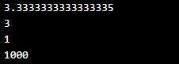
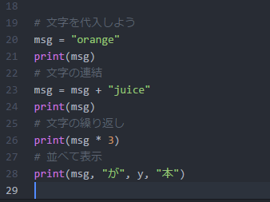
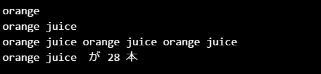

変数とは数値や文字などを格納しておく箱のようなものです。変数に値を代入し,演算した結果を出力します。

print関数は、文字列や数値を出力します。
|
print("文字列")
# 文字列（文字の集まり）を出力するとき |
test.pyではprint関数の（）の中に文字列や数値を入力しましたが、【例題1】では変数を使って演算します。
変数とは数値や文字などを格納しておく箱のようなものです。変数に値を代入し,演算した結果を出力します。
変数に名前をつけるときは以下のルールがあります。name や num など分かりやすい名前をつけるとよいです。
|
1) 1文字目は英文字かアンダーバー |
予約語とはあらかじめ関数名や演算子として登録されているもので、例えば次のようなものがあります。
関数や演算子はエディタ上で色分けされるので予約語かどうかの区別は簡単です。
|
【主な予約語 = 変数名として使えないもの】 |
▼test.pyとは別に、新規ファイルを開き、つぎのように入力します。kadaiフォルダ内に保存します。ファイル名は rei1.py
#は一行コメントです。複数行にわたるときは"""（ダブルクォーテーション3連）で挟みます。プログラムがどんな処理をしているのかメモするときなどに使います。
変数xに10を代入し、計算結果を出力してみましょう。
日本語以外はすべて半角文字で入力します。6行目から書き始めてください。

▼rei1実行結果

▼つづけて以下のように入力します。#コメント部分は書かなくてよいです。
＝（イコール）は代入演算子です。右辺の演算結果を変数に渡します。
自分自身に加算するときは14行目のように書いてもよいですし、16行目のような短い形で書くこともできます。

▼実行結果

▼文字列は””（または’’）ではさみます。文字列どうしを連結させたり、繰り返しができます。
#コメント部分は省略してください。

▼実行結果 ※28行目：print関数の引数は1つではなく、カンマで区切ることで複数の変数やデータを出力することができます。

（1）算術演算子
|
a + b # 加算 |
（2）代入演算子（++や--はサポートされていないので、a+=1 やa-=1 を用います）
|
a = b
# a に b を代入する |
（3）文字列演算
|
a + b
# 文字列 a と 文字列 b を連結します |
test.pyと同様、kadaiフォルダにrei1として上書き保存します。